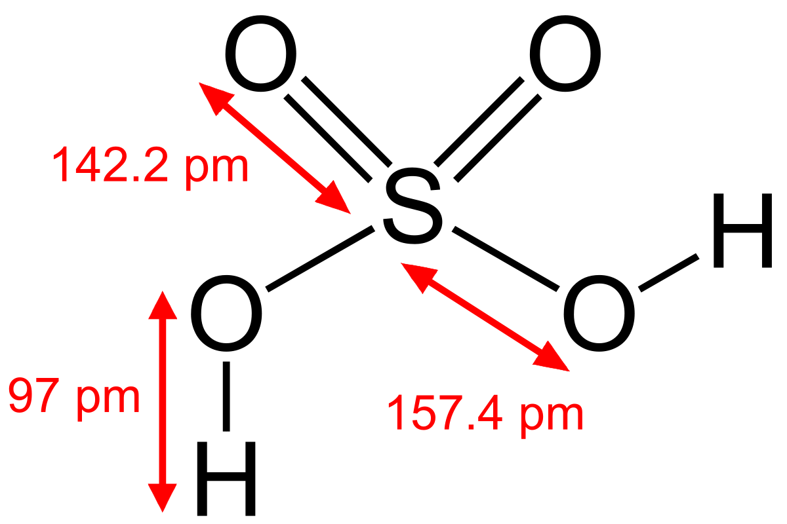

Quimica Organica
La química orgánica es la rama de la química que estudia la estructura, propiedades y reacciones de los compuestos y materiales orgánicos en sus variadas formas, que en su mayor parte contienen átomos de carbono y una pequeña cantidad de oxígeno, azufre, nitrógeno, halógenos, fósforo y silicio...

Quimica Inorganica
La química inorgánica se encarga del estudio integrado de la formación, composición, estructura y reacciones químicas de los elementos y compuestos inorgánicos (por ejemplo, ácido sulfúrico o carbonato de calcio); es decir, los que no poseen enlaces carbono-hidrógeno, porque estos pertenecen al campo de la química orgánica. Dicha separación no es siempre clara, como por ejemplo en la química organometálica que es una superposición de ambas...

Quimica Analitica
La química analítica estudia y utiliza instrumentos y métodos para separar, identificar y cuantificar la materia.1 En la práctica, la separación, identificación o cuantificación puede constituir el análisis completo o combinarse con otro método. La separación aísla los analitos. El análisis cualitativo identifica los analitos, mientras que el análisis cuantitativo determina la cantidad o concentración numérica...

Quimica Industrial
La química industrial es la rama de la química que aplica los conocimientos químicos a la producción de forma económica de materiales y productos químicos especiales con el mínimo impacto adverso sobre el medio ambiente...